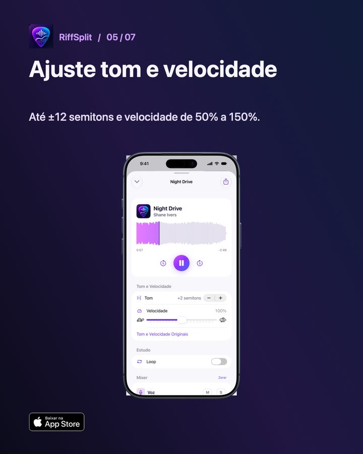

Como mudar o tom de uma música para cantar
Para mudar o tom de uma música e cantar confortável, transponha em semitons sem alterar a velocidade. No RiffSplit você ajusta o tom até 12 semitons para cima ou para baixo e pode silenciar a voz original com M, ficando só com a base para ensaiar. Cada semitom equivale a uma casa no braço do violão ou uma tecla no piano.

Passo a passo no RiffSplit
- Abra a música: Escolha a música separada na biblioteca do RiffSplit.
- Ajuste o tom: Em Tom e Velocidade, use + ou − para subir ou descer de semitom em semitom.
- Tire a voz original: Toque em M na faixa Voz para ensaiar só com a base.
- Teste o refrão: Cante a parte mais aguda e a mais grave. Se uma delas aperta, ajuste mais um semitom.
- Volte ao original quando quiser: Toque em Tom e Velocidade Originais para desfazer tudo de uma vez.
Como achar o seu tom
- Teste primeiro a nota mais aguda do refrão: ela decide o tom.
- Vozes masculinas cantando música de voz feminina costumam descer de 3 a 5 semitons; o contrário costuma subir na mesma faixa.
- Se for tocar junto no violão, anote quantos semitons mudou e use o capotraste ou transponha a cifra.
- Mudanças grandes, acima de 5 semitons, deixam o timbre mais artificial; se precisar de muito, teste uma oitava.
Perguntas frequentes
Mudar o tom muda a velocidade?
Não. Tom e velocidade são independentes no RiffSplit.
Dá para exportar a base no novo tom?
Sim, com o desbloqueio do app você exporta a mixagem do jeito que montou.
Funciona no iPad e no Mac?
Sim. O RiffSplit funciona no iPhone, iPad e Mac com Apple Silicon, e a biblioteca sincroniza pelo iCloud.

Outros guias
Atualizado em 08/11/2026.